Arbeidsgiveravgift er en avgift som arbeidsgivere i Norge må betale til staten basert på lønnsutbetalinger til sine ansatte. Denne avgiften utgjør en betydelig del av de totale lønnskostnadene for bedrifter og er en viktig inntektskilde for staten. Avgiften varierer geografisk og har flere unntak og fritak som gjør den til et komplekst, men essensielt element i norsk lønnshåndtering. Sammen med ansattes trygdeavgift finansierer arbeidsgiveravgift det norske velferdssystemet.
For en grundig gjennomgang av rollen som arbeidsgiver og deres ansvar, se Arbeidsgiver.
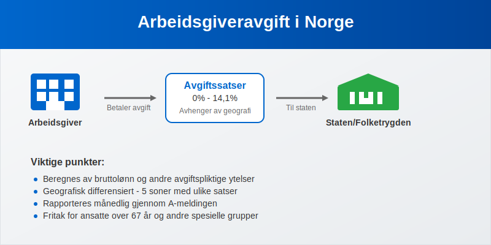
Seksjon 1: Grunnleggende om Arbeidsgiveravgift
1.1 Hva er Arbeidsgiveravgift?
Arbeidsgiveravgift er en avgift på lønn som arbeidsgivere betaler til staten som en prosentandel av den totale lønnsutbetalingen til ansatte. Avgiften beregnes av bruttolønnen og andre skattepliktige ytelser, og varierer mellom 0% og 14,1% avhengig av hvor virksomheten er lokalisert geografisk.
Avgiften ble innført som en del av finansieringen av folketrygden og andre offentlige velferdsordninger. Den er en direkte kostnad for arbeidsgiver og kommer i tillegg til den lønnen som utbetales til den ansatte.
1.2 Historisk Utvikling
Arbeidsgiveravgiften har gjennomgått flere endringer siden innføringen. Systemet med geografisk differensiering ble etablert for å stimulere næringsutvikling i distriktene ved å gi lavere avgiftssatser utenfor de sentrale områdene.
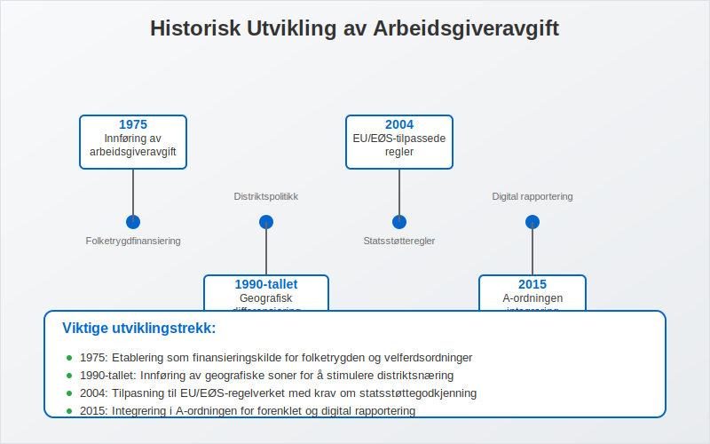
Viktige milepæler:
- 1975: Innføring av arbeidsgiveravgift som en del av folketrygdfinansieringen
- 1990-tallet: Etablering av geografisk differensiering med soner
- 2004: Innføring av EU/EØS-tilpassede regler
- 2015: Integrering i A-ordningen og A-meldingen
Seksjon 2: Geografiske Soner og Satser
2.1 Soneinndeling
Norge er delt inn i fem geografiske soner for arbeidsgiveravgift, hvor hver sone har sin egen avgiftssats. Inndelingen er basert på regionale utviklingshensyn og EU/EØS-regelverket.
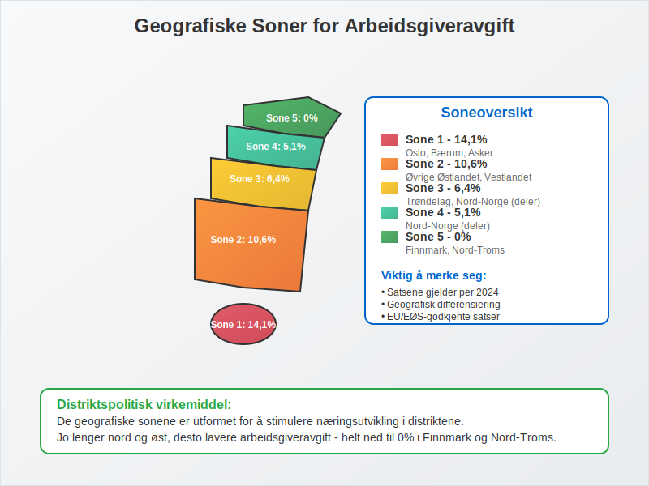
2.2 Gjeldende Satser (2024)
| Sone | Geografisk område | Avgiftssats | Beskrivelse |
|---|---|---|---|
| Sone 1 | Oslo, Bærum, Asker | 14,1% | Høyeste sats - sentrale strøk |
| Sone 2 | Øvrige Østlandet, Vestlandet | 10,6% | Standard sats for de fleste områder |
| Sone 3 | Trøndelag, Nord-Norge (deler) | 6,4% | Redusert sats for mindre sentrale områder |
| Sone 4 | Nord-Norge (deler) | 5,1% | Lav sats for distriktskommuner |
| Sone 5 | Finnmark, Nord-Troms | 0% | Fritak for nordligste områder |
2.3 Beregningsgrunnlag
Arbeidsgiveravgiften beregnes av følgende lønnskomponenter:
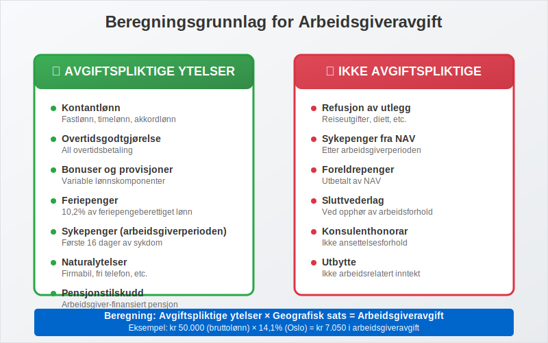
Avgiftspliktige ytelser:
- Kontantlønn (fastlønn, timelønn, akkordlønn)
- Overtidsgodtgjørelse
- Helligdagslønn og tilleggsgodtgjørelse for arbeid på helligdager
- Bonuser og provisjoner
- Feriepenger
- Sykepenger fra arbeidsgiver (arbeidsgiverperioden)
- Naturalytelser (firmabil, fri telefon, etc.)
- Pensjonstilskudd fra arbeidsgiver (se også tjenestepensjon)
Viktig: Arbeidsgiveravgift beregnes av hele bruttolønnen, selv om den ansatte har frikort og ikke betaler skatt på inntekten. Frikort påvirker kun skattetrekket, ikke arbeidsgiveravgiften.
Seksjon 3: Fritak og Unntak
3.1 Aldersbaserte Fritak
Arbeidsgiveravgiften har spesielle regler for eldre arbeidstakere som en del av sysselsettingspolitikken.
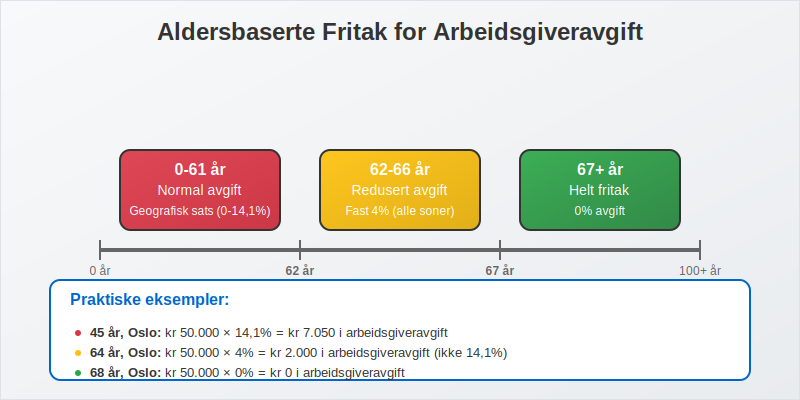
Fritak for ansatte over 62 år:
- Helt fritak for lønn til ansatte som er 67 år eller eldre
- Redusert avgift for ansatte mellom 62-66 år (kun 4% avgift uavhengig av sone)
- Gjelder kun for ordinære ansettelsesforhold (ikke konsulenter eller frilansere)
3.2 Andre Fritak og Unntak
| Type fritak | Beskrivelse | Vilkår |
|---|---|---|
| Lærlinger | Fritak første to år av læretiden | Godkjent lærlingkontrakt |
| Forskere | Fritak for utenlandske forskere | Spesielle vilkår, tidsbegrenset |
| Sjøfolk | Redusert avgift for ansatte på skip | Norskregistrerte skip |
| Små utbetalinger | Fritak under visse beløpsgrenser | Under kr 1.000 per måned |
3.3 Praktiske Eksempler på Beregning
La oss se på konkrete eksempler på hvordan arbeidsgiveravgiften beregnes i ulike situasjoner:
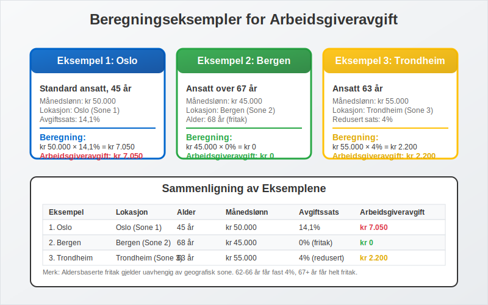
Eksempel 1: Standard ansatt i Oslo
- Månedslønn: kr 50.000
- Sone: 1 (Oslo)
- Avgiftssats: 14,1%
- Arbeidsgiveravgift: kr 50.000 × 14,1% = kr 7.050
Eksempel 2: Ansatt over 67 år i Bergen
- Månedslønn: kr 45.000
- Sone: 2 (Bergen)
- Aldersgruppe: Over 67 år
- Arbeidsgiveravgift: kr 0 (helt fritak)
Eksempel 3: Ansatt 63 år i Trondheim
- Månedslønn: kr 55.000
- Sone: 3 (Trondheim)
- Aldersgruppe: 62-66 år
- Arbeidsgiveravgift: kr 55.000 × 4% = kr 2.200
Seksjon 4: Rapportering og Betaling
4.1 A-meldingen som Rapporteringskanal
Arbeidsgiveravgiften rapporteres månedlig gjennom A-meldingen som en del av A-ordningen. Dette systemet forenkler rapporteringen betydelig sammenlignet med tidligere ordninger.
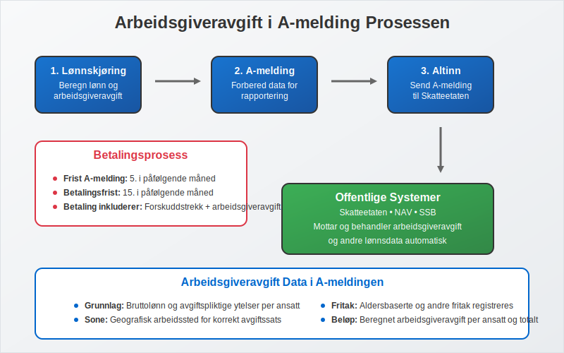
Rapporteringsprosess:
- Lønnskjøring: Beregn lønn og arbeidsgiveravgift
- A-melding: Rapporter data til Skatteetaten via Altinn
- Betaling: Betal samlet forskuddstrekk og arbeidsgiveravgift
- Bokføring: Registrer i regnskapet
4.2 Frister og Betalingsrutiner
| Måned | A-melding frist | Betalingsfrist | Merknad |
|---|---|---|---|
| Januar | 5. februar | 15. februar | Første termin |
| Februar | 5. mars | 15. mars | |
| Mars | 5. april | 15. april | |
| April | 5. mai | 15. mai | |
| Mai | 5. juni | 15. juni | |
| Juni | 5. juli | 15. juli | Feriemåned - vær ekstra oppmerksom |
Viktige frister:
- A-melding: Senest den 5. i påfølgende måned
- Betaling: Senest den 15. i påfølgende måned
- Forsinkelsesgebyr: Påløper ved for sen innlevering eller betaling
4.3 Regnskapsmessig Behandling
Arbeidsgiveravgiften skal behandles korrekt i bedriftens regnskap som en del av lønnskostnadene, sammen med andre obligatoriske arbeidsgiverutgifter som obligatorisk tjenestepensjon.
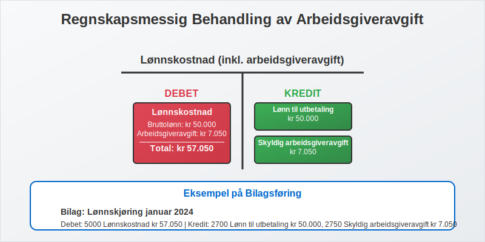
Konteringseksempel:
Debet: Lønnskostnad (inkl. arbeidsgiveravgift) kr 57.050
Kredit: Lønn til utbetaling kr 50.000
Kredit: Skyldig arbeidsgiveravgift kr 7.050
Seksjon 5: Spesielle Situasjoner og Utfordringer
5.1 Virksomheter med Flere Lokasjoner
Bedrifter som opererer i flere geografiske soner må håndtere ulike avgiftssatser for samme lønnskjøring.

Praktisk håndtering:
- Separate lønnskjøringer per lokasjon
- Korrekt sonekoding i lønnssystemet
- Dokumentasjon av arbeidssted for hver ansatt
5.2 Konsulenter og Frilansere
Viktig skille:
- Ansatte: Arbeidsgiveravgift påløper
- Konsulenter/frilansere: Ingen arbeidsgiveravgift (men kan være merverdiavgift)
- Lett salær: Ingen arbeidsgiveravgift for kvalifiserende arbeidstyper
- Grensedragning: Basert på arbeidsrettslige kriterier som definerer arbeidsforholdstypen
5.3 Internasjonale Forhold
For virksomheter med utenlandske ansatte eller som opererer internasjonalt, gjelder spesielle regler.
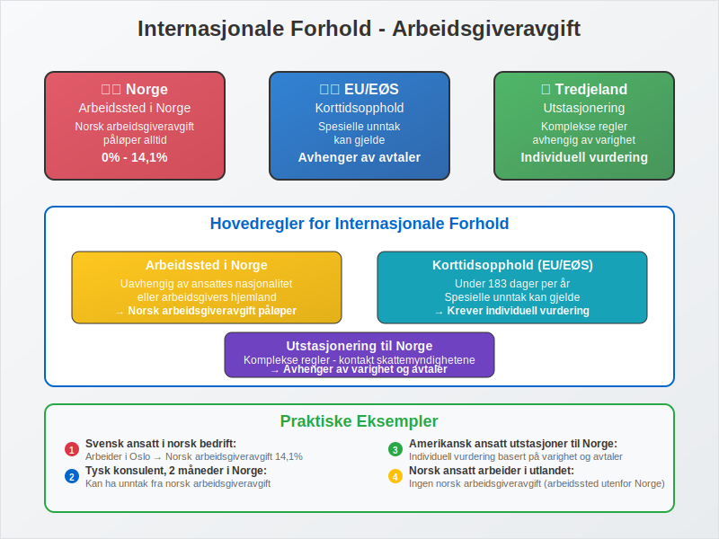
Hovedregler:
- Arbeidssted i Norge: Norsk arbeidsgiveravgift påløper
- Korttidsopphold: Spesielle unntak kan gjelde
- Utstasjonering: Komplekse regler avhengig av varighet og avtaler
Seksjon 6: Fremtidige Endringer og Utvikling
6.1 Politiske Diskusjoner
Arbeidsgiveravgiften er gjenstand for kontinuerlige politiske diskusjoner, særlig knyttet til:
- Konkurransekraft: Høye avgifter kan svekke norske bedrifters konkurranseevne
- Distriktspolitikk: Geografisk differensiering som virkemiddel
- EU/EØS-tilpasning: Krav om statsstøttegodkjenning for lave satser
6.2 Digitalisering og Automatisering
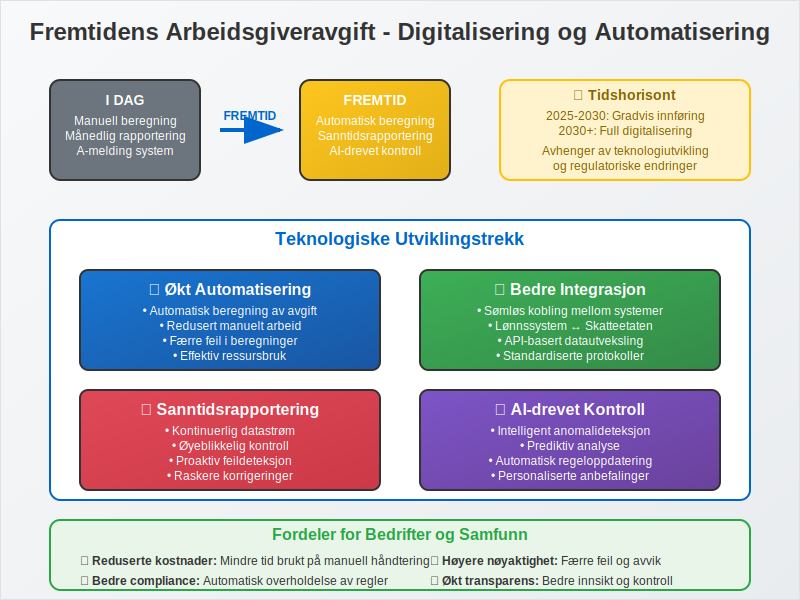
Teknologiske utviklingstrekk:
- Økt automatisering i beregning og rapportering
- Bedre integrasjon mellom lønnssystemer og offentlige systemer
- Sanntidsrapportering og -kontroll
Seksjon 7: Praktiske Tips og Beste Praksis
7.1 Rutiner for Korrekt Håndtering
Månedlige rutiner:
- Kontroller sonekoding for alle ansatte
- Beregn korrekt avgift basert på alle avgiftspliktige ytelser
- Lever A-melding innen fristen
- Betal avgiften innen betalingsfristen
- Bokfør transaksjonen korrekt i regnskapet
7.2 Vanlige Feil og Hvordan Unngå Dem
| Vanlig feil | Konsekvens | Hvordan unngå |
|---|---|---|
| Feil sonekoding | Feil avgiftsberegning | Oppdater ved flytting/endring |
| Glemte ytelser | For lav avgift | Sjekkliste over avgiftspliktige ytelser |
| Aldersgruppe-feil | Feil fritak | Oppdater personnummer og alder |
| For sen rapportering | Gebyr og renter | Automatiske påminnelser |
7.3 Kontroll og Etterlevelse
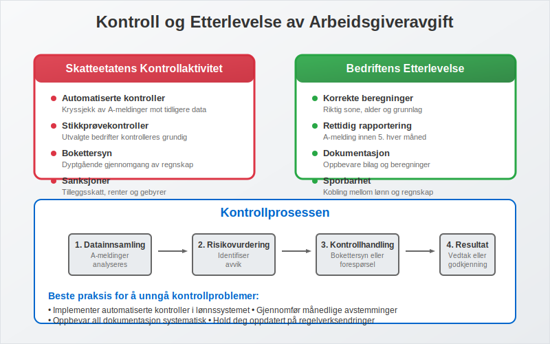
Skatteetatens kontrollaktivitet:
- Automatiserte kontroller av A-meldinger
- Stikkprøvekontroller av bedrifter
- Bokettersyn med fokus på lønnskostnader
Forberedelse til kontroll:
- Dokumenter alle beregninger og vurderinger
- Oppbevar lønnsbilag og arbeidskontrakter
- Sørg for sporbarhet mellom lønnssystem og regnskap
Konklusjon
Arbeidsgiveravgift er en kompleks, men fundamental del av norsk lønnshåndtering. Med korrekt forståelse av regelverket, geografiske forskjeller og rapporteringskrav, kan bedrifter sikre korrekt beregning og rapportering.
Den geografiske differensieringen gjør systemet til et viktig distriktspolitisk virkemiddel, mens integrasjonen i A-ordningen har forenklet den administrative håndteringen betydelig. For bedrifter er det essensielt å ha gode rutiner og systemer som sikrer korrekt beregning og rettidig rapportering.
Ved å følge beste praksis og holde seg oppdatert på regelverksendringer, kan arbeidsgivere unngå kostbare feil og bidra til et velfungerende system for finansiering av norske velferdsordninger.
Relaterte Artikler
- Obligatorisk Tjenestepensjon - Lovpålagt pensjonsordning for arbeidsgivere
- A-ordningen - Det samordnede rapporteringssystemet
- A-meldingen - Månedlig rapportering av lønn og avgifter
- Lett Salær - Lønnsordning uten arbeidsgiveravgift
- Akkordlønn - Spesiell lønnsform med avgiftskonsekvenser
- Arbeidsforholdstype - Juridiske rammer for arbeidsforhold og avgiftskonsekvenser
- Altinn - Digital rapporteringsplattform
- Regnskap - Regnskapsmessig behandling av lønnskostnader